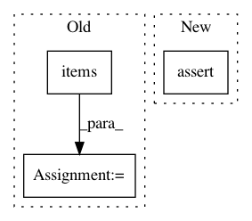

85197deece837a1f4ffdbbffb72af6028a9b6e32,python/ray/autoscaler/_private/autoscaler.py,StandardAutoscaler,request_resources,#StandardAutoscaler#Any#,608
Before Change
if isinstance(resources, list):
self.resource_demand_vector = resources
else:
for resource, count in resources.items():
self.resource_requests[resource] = max(
self.resource_requests[resource], count)
def kill_workers(self):
logger.error("StandardAutoscaler: kill_workers triggered")
nodes = self.workers()
if nodes:
After Change
if resources:
logger.info(
"StandardAutoscaler: resource_requests={}".format(resources))
assert isinstance(resources, list), resources
self.resource_demand_vector = resources
def kill_workers(self):
logger.error("StandardAutoscaler: kill_workers triggered")
In pattern: SUPERPATTERN
Frequency: 3
Non-data size: 3
Instances
Project Name: ray-project/ray
Commit Name: 85197deece837a1f4ffdbbffb72af6028a9b6e32
Time: 2020-11-11
Author: ameerh@berkeley.edu
File Name: python/ray/autoscaler/_private/autoscaler.py
Class Name: StandardAutoscaler
Method Name: request_resources
Project Name: keras-team/keras
Commit Name: 44d558ad7f13251650f40475eef6652df59e4b09
Time: 2016-02-22
Author: Nicholas.Eggert@target.com
File Name: keras/layers/containers.py
Class Name: Graph
Method Name: set_previous
Project Name: OpenMined/PySyft
Commit Name: 489972a9e467eb20a7ebbe2b5e37c63b3d5bb2aa
Time: 2020-10-19
Author: murarugeorgec@gmail.com
File Name: syft/frameworks/torch/tensors/interpreters/additive_shared.py
Class Name: AdditiveSharingTensor
Method Name: get_garbage_collect_data